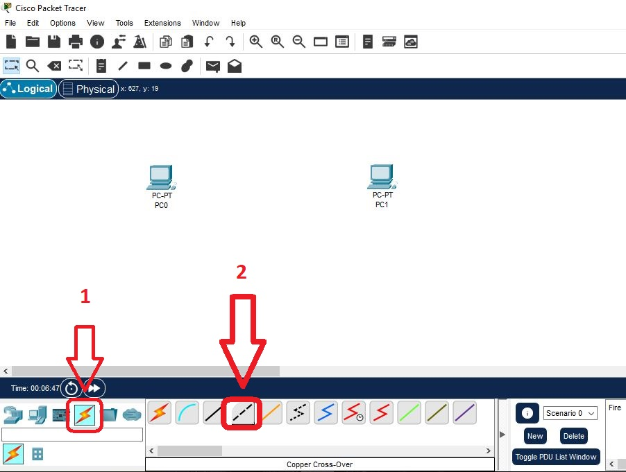
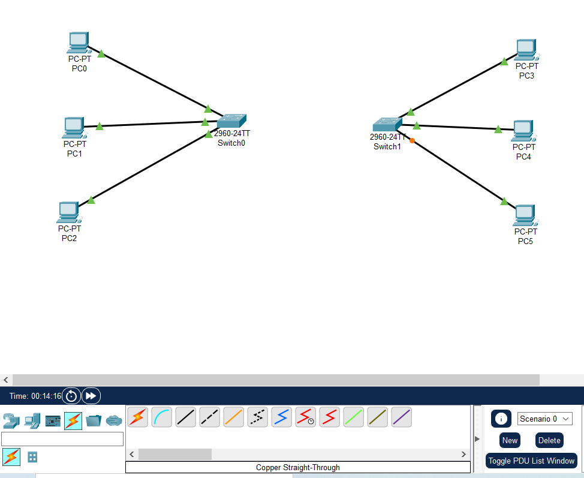
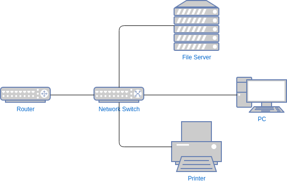
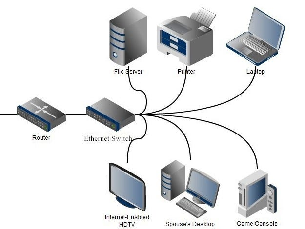
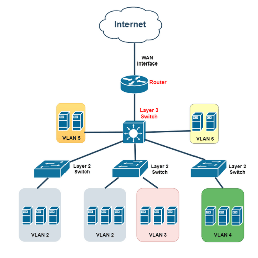
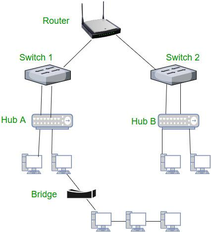
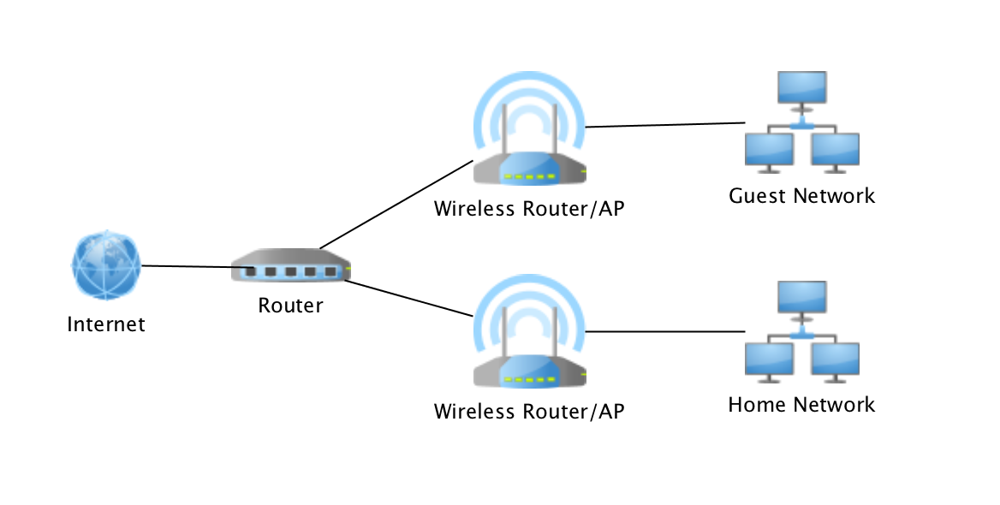
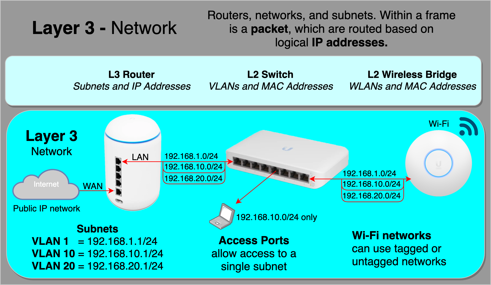
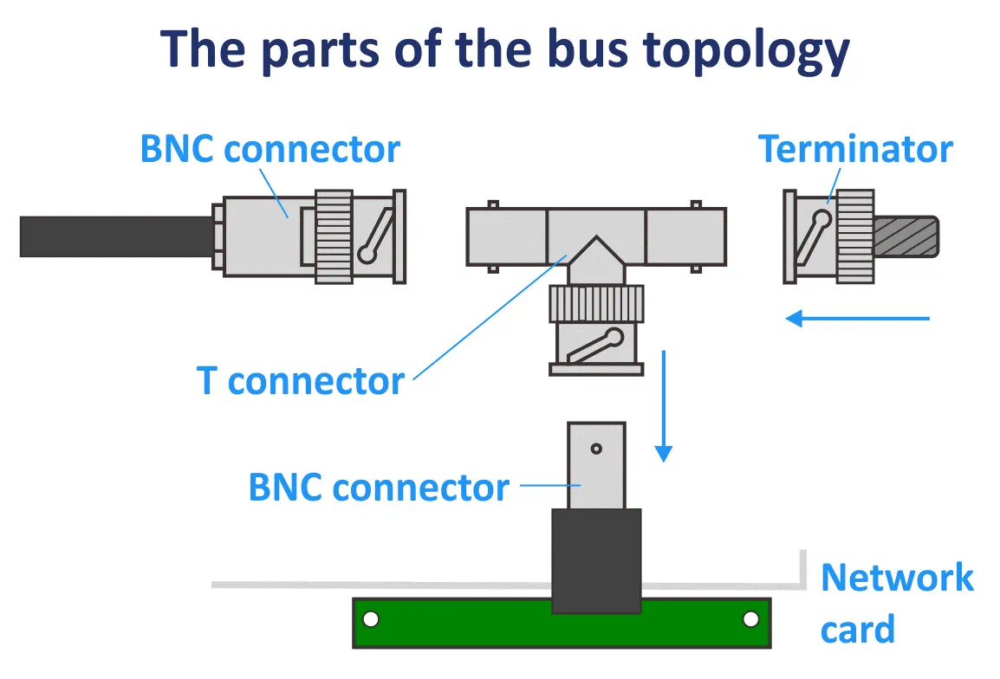

🔌 Cabling Using Network Diagrams
○ Patch Cables
Cabling is the physical foundation of networking. In network diagrams, patch cables are the most commonly used cables to show and implement real connections—especially in labs, offices, and Cisco Packet Tracer environments.
🧠 What Is a Patch Cable?
A patch cable is a short Ethernet cable used to connect network devices over short distances.
Commonly used to connect:
- PC → Switch
- Switch → Router
- Switch → Patch Panel
- Switch → Switch
🧵 Types of Patch Cables (Based on Wiring)


1️⃣ Straight-Through Patch Cable (MOST USED)
What it is:
- Same wiring on both ends
- T568A ↔ T568A or T568B ↔ T568B
| Device A | Device B |
|---|---|
| PC | Switch |
| Switch | Router |
| PC | Hub |
2️⃣ Crossover Patch Cable
What it is:
- Different wiring on each end
- T568A ↔ T568B
| Device A | Device B |
|---|---|
| PC | PC |
| Switch | Switch |
| Router | Router |
🗺️ Patch Cables in Network Diagrams
How patch cables are shown:
- Lines represent cables
- Straight line = Ethernet patch cable
- Labels show port numbers and cable type

PC ───(Patch Cable)─── Switch ───(Patch Cable)─── Router
🧪 Cisco Packet Tracer – Patch Cable Usage



🔧 Step-by-Step (Exam + Lab)
- Click Connections (⚡)
- Select Copper Straight-Through
- Click PC → FastEthernet0
- Click Switch → FastEthernet0/1
- Wait → LED turns green
📊 Patch Cable Categories (Speed Awareness)
| Category | Speed Support |
|---|---|
| Cat5e | 1 Gbps |
| Cat6 | 1–10 Gbps |
| Cat6a | 10 Gbps |
| Cat7 | 10+ Gbps |
⚠️ Common Cabling Mistakes (Very Important)
- Using crossover instead of straight cable
- Wrong port selection
- Damaged patch cable
- Exceeding 100m Ethernet limit
🧠 Real-World Troubleshooting Example
Problem: PC not connecting
- No LED light
- Diagram shows PC → Switch
- ✔ Use straight-through patch cable
🔀 Switches & Routers
Switches and routers are the core building blocks of any network. If you understand what they do, where they work, and how traffic flows through them, networking becomes easy—both for CCST exams and real networks.
🔁 PART 1: Switch




📌 What Is a Switch?
A switch connects multiple devices within the same local network (LAN) and forwards data only to the intended device.
🧠 How a Switch Works (Step-by-Step)
- PC sends data
- Switch reads destination MAC address
- Looks up MAC address table
- Forwards data only to the correct port
🧪 Example (Office LAN)
PC1 ─┐
PC2 ─┼── Switch ─── Printer
PC3 ─┘
- All devices communicate locally
- No internet routing required
🧵 Switch Uses Patch Cables
- PC → Switch (Straight-through)
- Printer → Switch
- Server → Switch
✅ Advantages of Switch
- Fast LAN communication
- Reduces collisions
- More secure than hubs
❌ Limitations
- Cannot connect different networks
- Cannot route IP packets
- No internet decision-making
🌐 PART 2: Router




📌 What Is a Router?
A router connects different networks and decides where data should go next.
🧠 How a Router Works (Step-by-Step)
- Receives packet
- Reads destination IP address
- Checks routing table
- Forwards packet to next network
🧪 Example (Home Network)
PC → Switch → Router → Internet
- Router connects LAN to ISP
- Assigns IP addresses (DHCP)
- Uses NAT for internet access
🧵 Router Connections
- Switch → Router
- Router → ISP
- Router → Router (WAN)
✅ Advantages of Router
- Connects different networks
- Provides internet access
- Supports NAT, DHCP, firewall
❌ Limitations
- Slower than switches (packet decisions)
- More expensive
- Requires configuration
🔍 Switch vs Router (Exam-Ready)
| Feature | Switch | Router |
|---|---|---|
| OSI Layer | Layer 2 | Layer 3 |
| Uses | MAC Address | IP Address |
| Connects | Devices | Networks |
| Internet Access | ❌ No | ✅ Yes |
| Speed | Very fast | Slower |
| Example | Office LAN | Home Router |
🧪 Cisco Packet Tracer – Where You Use Them


PC ─ Switch ─ Router ─ ISP
- Switch LEDs show local activity
- Router interfaces show network routing
🧠 Real-World Troubleshooting Scenarios
🔧 Scenario 1: PCs Can’t Talk to Each Other
- Check switch
- Check cables
- Verify MAC learning
🔧 Scenario 2: PCs Can Talk but No Internet
- Switch is OK
- Router misconfigured
- Check gateway, NAT, routing
Switch = Local traffic manager
Router = Network traffic director
Switch talks MAC
Router talks IP
🧩 Small Topologies
Small network topologies are simple layouts used in homes, labs, classrooms, and CCST practice. They help you understand how devices connect and how data flows before moving to large networks.
⭐ What Is a Small Topology?
- Uses few devices (PCs, switch, router)
- Covers short distances
- Easy to design, troubleshoot, and test
1️⃣ Point-to-Point Topology (Smallest Possible)

📌 Structure
PC ─── PC
🔹 Description
- Direct connection between two devices
- No switch or router required
🔧 Cable Used
- Crossover cable (older devices)
- Straight-through cable (Auto-MDI/MDIX devices)
✅ Where Used
- Quick file sharing
- NIC testing
- Simple labs
❌ Limitation
- Only two devices
- No scalability
2️⃣ Small Star Topology (PCs + One Switch)

📌 Structure
PC1 ─┐
PC2 ─┼── Switch
PC3 ─┘
🔹 Description
- All devices connect to a central switch
- Most common LAN topology
🔧 Cable Used
- Straight-through patch cables
✅ Advantages
- Easy to manage
- One cable failure doesn’t affect others
- Fast communication
❌ Limitation
- If switch fails → entire network down
3️⃣ Small Star + Router (Home / Office Network)


📌 Structure
PCs ─ Switch ─ Router ─ Internet
🔹 Description
- Switch handles local communication
- Router connects LAN to the Internet
🔧 Cables Used
- PC → Switch (Straight-through)
- Switch → Router (Straight-through)
✅ Used In
- Homes
- Small offices
- Training labs
4️⃣ Bus Topology (Very Small / Legacy)


📌 Structure
PC ─ PC ─ PC ─ PC
🔹 Description
- All devices share one cable
- Used in old coaxial Ethernet networks
❌ Problems
- Collisions
- Difficult troubleshooting
- Single cable break stops entire network
5️⃣ Ring Topology (Small Lab Concept)
📌 Structure
PC → PC → PC → PC → (Back to First)
🔹 Description
- Data moves in one direction
- Each device forwards data to next
❌ Limitation
- One device failure breaks the ring
📊 Small Topologies Comparison (Exam-Ready)
| Topology | Devices | Used Today | Key Point |
|---|---|---|---|
| Point-to-Point | 2 | ✅ Yes | Direct link |
| Star | Many | ✅ Yes | Central switch |
| Star + Router | Many | ✅ Yes | Internet access |
| Bus | Many | ❌ No | Single cable |
| Ring | Many | ❌ Rare | Circular path |
🧠 How to Identify in Exams
- One central switch → Star
- Two devices only → Point-to-Point
- Internet involved → Router present
- Single shared cable → Bus
⚡🗄️ Power & Rack Layout
Power and rack layout are critical parts of network infrastructure design. Even if devices are configured perfectly, wrong power or poor rack layout can bring the entire network down.
⚡ PART 1: Power in Network Infrastructure


🔌 Why Power Matters
Network devices require:
- Continuous power
- Clean (stable) power
- Backup power
1️⃣ Primary Power Source
Primary power comes from the main electrical supply and powers core network devices.
- Switches
- Routers
- Firewalls
- Servers
2️⃣ UPS (Uninterruptible Power Supply) – VERY IMPORTANT
What UPS does:
- Provides backup power during outages
- Protects devices from voltage spikes
- Prevents sudden shutdowns
Example:
- Power goes off
- UPS keeps router and switch ON
- Internet continues for some time
3️⃣ PDU (Power Distribution Unit)
What PDU does:
- Distributes power to multiple devices
- Installed inside the rack
4️⃣ Redundant Power Supplies (Enterprise Level)
What it means:
- Device has two power inputs
- If one fails, the other continues
Commonly seen in:
- Core switches
- Enterprise routers
- Servers
🗄️ PART 2: Rack Layout (Network Rack Design)


📌 What Is a Network Rack?
A network rack is a metal frame used to mount and organize networking equipment.
- Standard size: 19-inch rack
- Measured in rack units (U)
- 1U = 1.75 inches
📐 Standard Rack Layout (Top → Bottom)
🔝 Top Section
- Patch panels
- Cable managers
🖧 Middle Section
- Switches
- Routers
- Firewalls
🔻 Bottom Section
- UPS
- Heavy power equipment
🧵 Cable Management in Racks


Best practices:
- Use patch panels
- Label all cables
- Use cable organizers
- Separate power and data cables
Avoid:
- Hanging cables
- Tangled wires
- Blocked airflow
🌬️ Cooling & Airflow


Why Cooling Is Important
- Devices generate heat
- Heat causes hardware failure
Best practices:
- Front-to-back airflow
- Ventilated racks
- Cooling fans or AC
🧠 Small Office Example (Complete Picture)
[ Patch Panel ]
[ Switch ]
[ Router ]
[ Firewall ]
[ Cable Manager ]
[ UPS ]
[ PDU ]
- ✔ Clean
- ✔ Safe
- ✔ Reliable